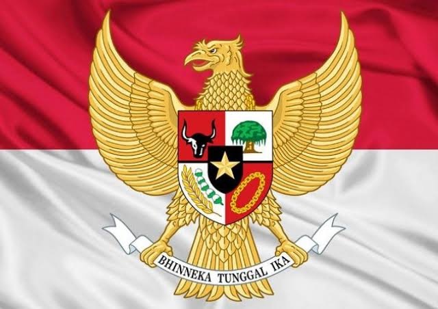
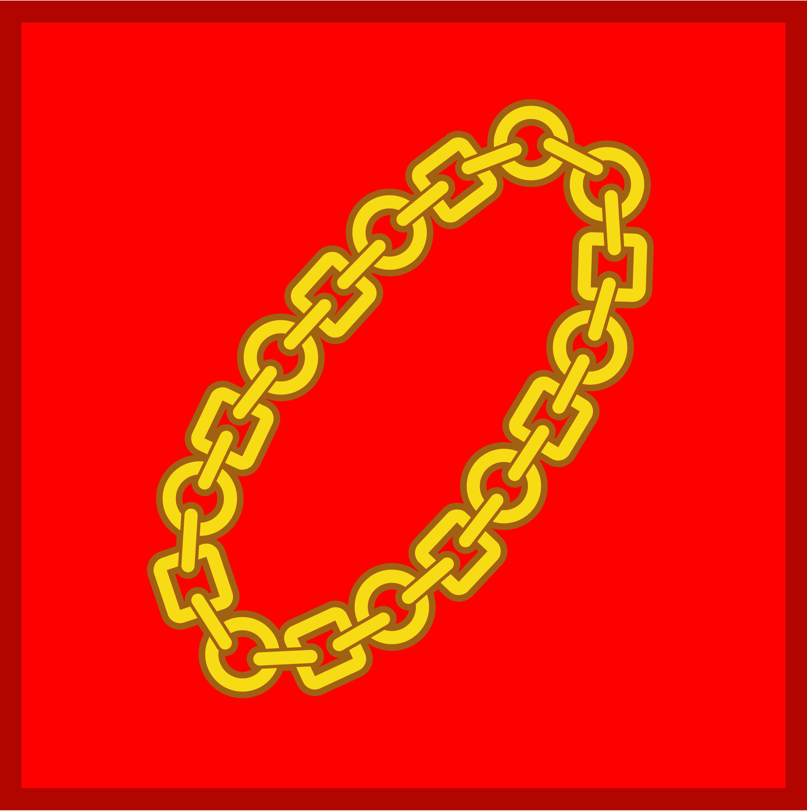

Kaitan Pancasila
dengan SDGs 4
Pancasila dan SDGs memiliki hubungan yang sangat erat. SDGs nomor 4, yaitu Pendidikan Berkualitas, berkaitan dengan nilai-nilai Pancasila, terutama sila ke-2 dan sila ke-5. Sila ke-2 menekankan pentingnya menghargai hak setiap manusia untuk mendapatkan pendidikan yang layak secara adil. Sementara itu, sila ke-5 berkaitan dengan pemerataan akses pendidikan agar setiap orang memiliki kesempatan yang sama untuk memperoleh pendidikan.

Sila ke-2 Pancasila
Nilai yang terkandung dalam sila ke-2 adalah persamaan derajat dan hak setiap manusia. Hal ini berarti setiap anak berhak mendapatkan pendidikan yang sama tanpa membedakan latar belakang mereka. Sila ke-2 juga menjunjung tinggi Hak Asasi Manusia (HAM), termasuk hak untuk memperoleh pendidikan yang layak dan berkualitas.

Sila ke-5 Pancasila
Sila ke-5 mengandung nilai keadilan dan kesetaraan dalam memberikan kesempatan kepada setiap anak untuk memperoleh akses pendidikan yang sama. Sila ini juga mengajarkan pentingnya keseimbangan antara hak dan kewajiban serta semangat gotong royong dalam kehidupan bermasyarakat.
Kaitan Sila dengan SDGs 4
Nilai-nilai Pancasila penting untuk mendukung SDGs 4 karena menjadi pedoman dalam mewujudkan pendidikan yang adil dan merata bagi seluruh masyarakat. Sila ke-2 mengajarkan kita untuk menghargai hak setiap anak dalam memperoleh pendidikan tanpa membedakan latar belakang mereka. Sementara itu, sila ke-5 menekankan pentingnya keadilan dan kesetaraan agar setiap anak memiliki kesempatan yang sama untuk mendapatkan pendidikan berkualitas. Dengan menerapkan nilai-nilai tersebut, Indonesia dapat mendukung tercapainya SDGs 4 dan mengurangi kesenjangan pendidikan. Nilai-nilai Pancasila juga menjadi pedoman bagi pemerintah dalam menjalankan tanggung jawabnya untuk mewujudkan pendidikan yang berkualitas di Indonesia. Sebagai dasar negara, Pancasila menjadi landasan dalam membuat kebijakan dan melakukan tindakan nyata untuk mengurangi kesenjangan pendidikan serta memastikan setiap anak mendapatkan hak pendidikan yang layak.